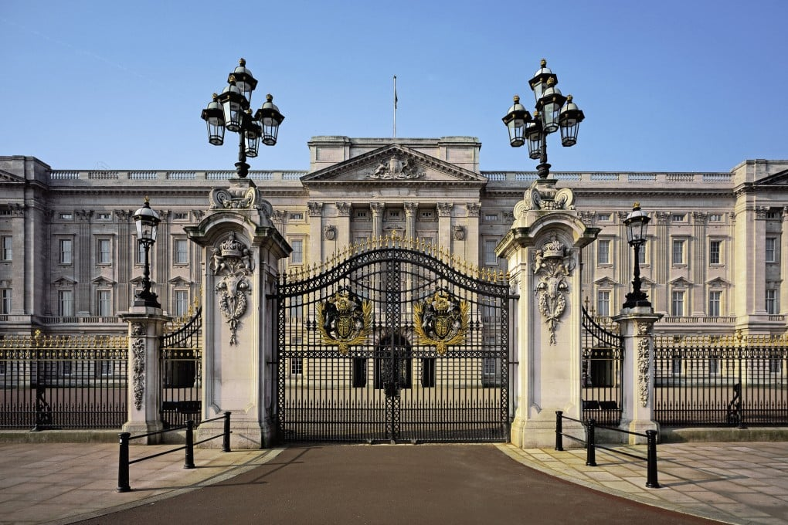
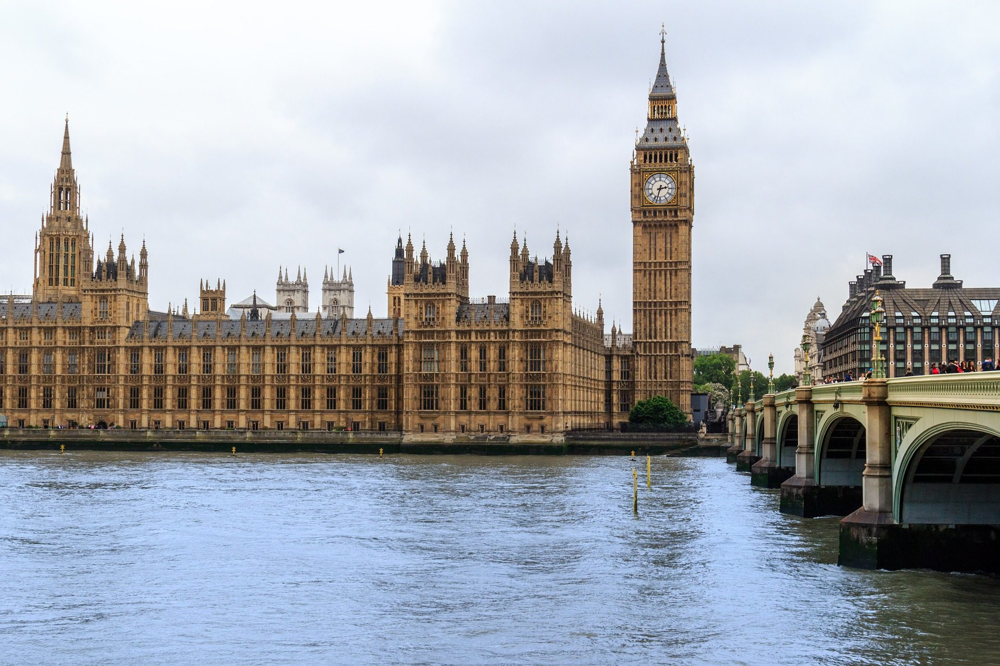
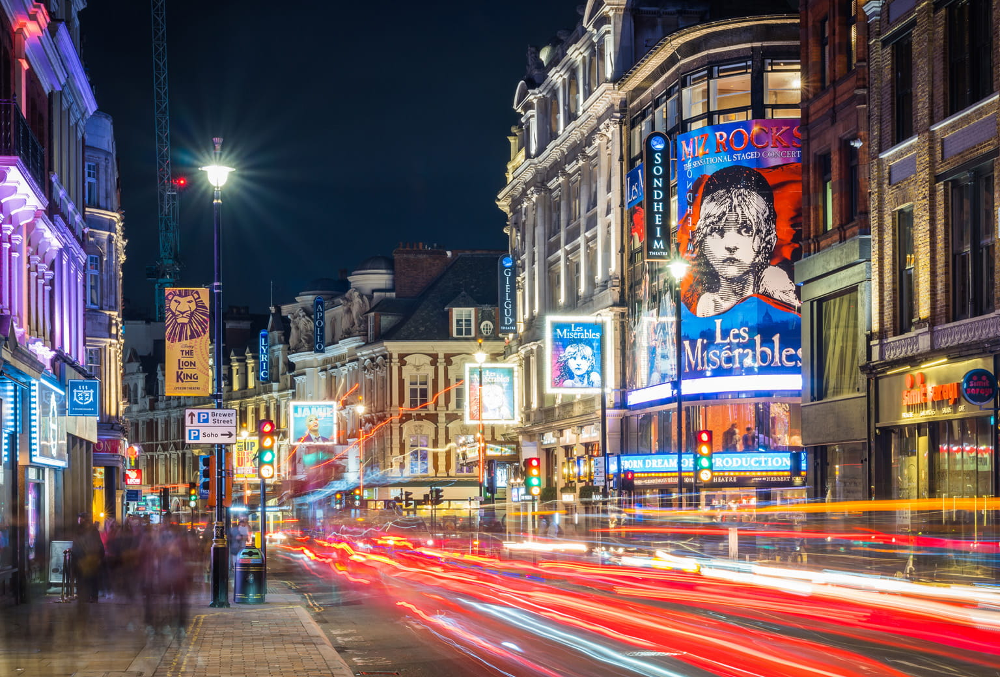

LONDON TRAVEL GUIDE
London, the capital of England and the United Kingdom, is a vibrant metropolis known for its rich history, diverse culture, and iconic landmarks. From the majestic Tower of London to the bustling markets of Camden, there’s something for everyone in this city.

Key Attractions
1. The British Museum

A treasure trove of art and antiquities from around the world, the British Museum showcases over two million years of history. Its extensive collections include the Rosetta Stone, which unlocked the secrets of ancient Egyptian hieroglyphs, and the Elgin Marbles from the Parthenon in Athens. Admission is free, but special exhibitions may require a ticket.
2. The Tower of London

This historic castle, a UNESCO World Heritage Site, has served various roles throughout its long history, including royal palace, fortress, and prison. Visitors can explore its medieval architecture, see the Crown Jewels on display, and learn about the intriguing stories of those who were imprisoned here. Guided tours by Yeoman Warders, known as Beefeaters, are highly recommended for a deeper understanding of its history.
3. Buckingham Palace
As the official residence of the British monarch, Buckingham Palace is a must-see for any visitor to London. The palace is an architectural marvel, and during the summer months, certain areas are open to the public. The Changing of the Guard ceremony, with its impressive pageantry and music, takes place regularly and is a favorite among tourists.
4. The Houses of Parliament and Big Ben
The iconic Houses of Parliament, also known as the Palace of Westminster, is renowned for its stunning Gothic architecture. Big Ben, the clock tower that is one of London’s most recognizable symbols, recently underwent restoration but remains a sight to behold. Guided tours of Parliament are available when it’s not in session, providing insight into British politics.
5. The London Eye

This giant observation wheel on the South Bank of the River Thames offers breathtaking panoramic views of London’s skyline. Standing at 135 meters tall, each glass capsule can accommodate up to 25 people, making it perfect for couples, families, and groups. The experience is particularly enchanting at sunset or during the evening when the city is illuminated.
6. The Tate Modern

Located in a former power station, the Tate Modern is one of the world’s leading contemporary art museums. The museum houses an impressive collection of modern masterpieces by artists such as Picasso, Warhol, and Hockney. Admission is free for the permanent collection, and there are often special exhibitions that may require tickets.
7. Covent Garden

A lively district known for its shopping, dining, and entertainment, Covent Garden features a famous market, street performers, and a wide range of cafes and restaurants. It’s an excellent place to spend an afternoon, whether you’re browsing artisan goods or enjoying a meal at one of the many eateries.
8. The West End
London’s theater district is renowned for its high-quality productions, ranging from classic plays to modern musicals. The West End is home to famous venues such as the Lyceum Theatre and the Apollo Victoria Theatre. Booking tickets in advance is advisable, especially for popular shows like "The Lion King" or "Wicked."